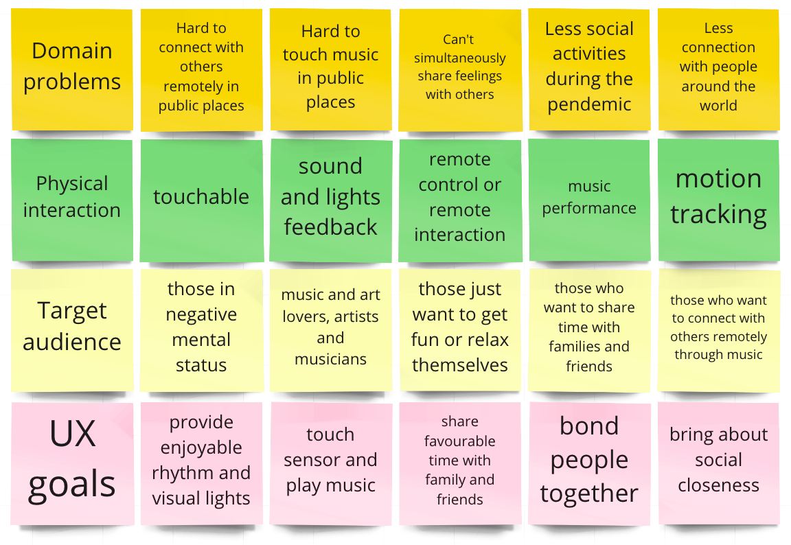
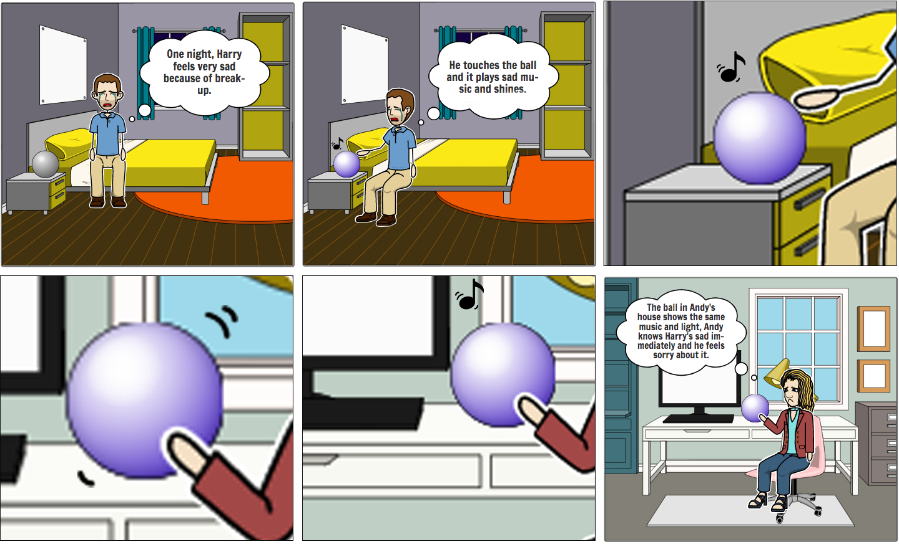
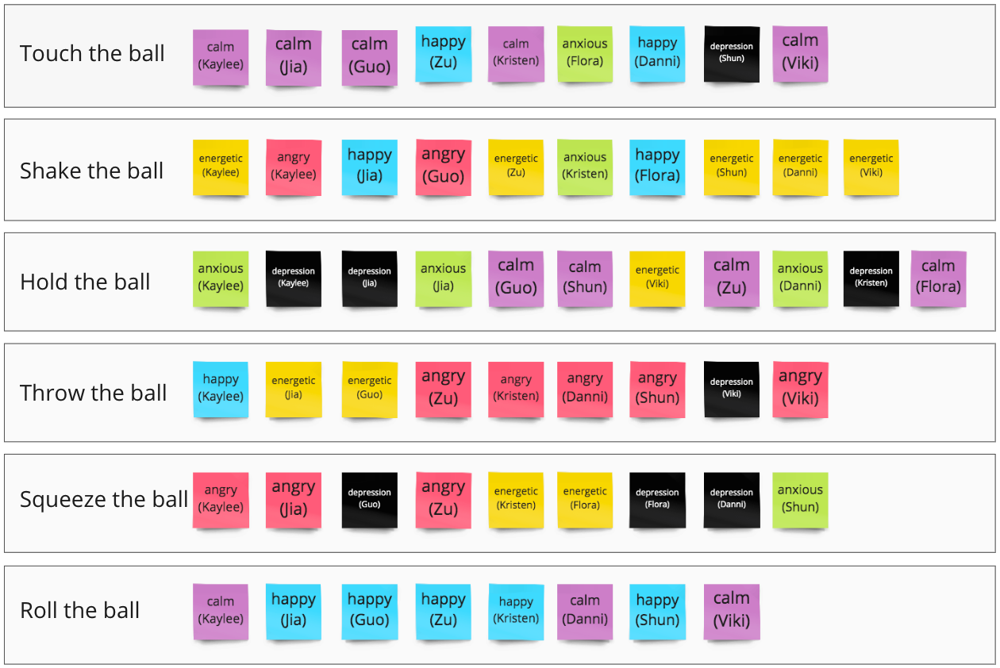
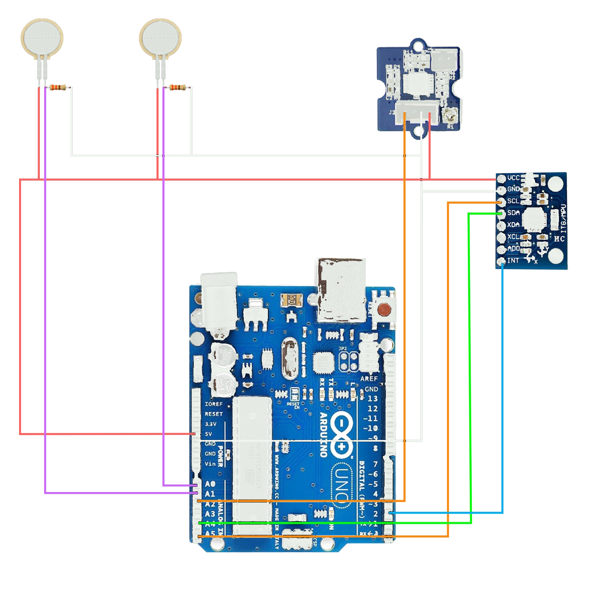

Interaction design, hardware, software, media, and research were developed collaboratively.
01 / Brief
Turn music into a shared physical language.
The proposal began as Connection: a multi-person music installation in which every participant contributed an instrument or melody. The richer the group interaction, the richer the combined sound and coloured light became.
Research and pitch feedback shifted the project toward a smaller object for homes and classrooms. MoodBall kept the original idea of synchronous music sharing, but focused it on close relationships: one person handles the ball, the system interprets the interaction, and a paired ball can mirror the response for someone elsewhere.
Source: project proposal ↗The formative protocol tested comprehension, interaction flow, and preferred mappings.
Touch, shake, hold, throw, squeeze, and roll were explored through bodystorming.
The protocol linked music features to a broader emotional vocabulary before simplification.
02 / Concept evolution
Feedback moved the experience from public performance to personal connection.
Public, fixed installation
↓ Design response Homes, classrooms, and familiar groupsPeople touch each other to build music
↓ Design response A personal ball creates a safer tactile interfaceOne local group performance
↓ Design response Paired balls mirror feedback across distanceFriends, families, neighbours, and classmates who already have a trusted relationship.
When someone wants to check, express, or share a mood without leading with words.
A shared indoor space, ideally with lower ambient light so LEDs and projection remain visible.


03 / Design process
Research, scenarios, bodystorming, and prototyping narrowed the interaction.
Explore the domain
Precedent research, a survey, interviews, and literature review mapped music, embodied interaction, remote connection, and emotional support.
Frame the experience
Scenarios and storyboards tested how a personal object could communicate mood between people with close relationships.
Prototype the mapping
Bodystorming and evaluation activities connected gestures with perceived emotional states and exposed ambiguous mappings.
Build and exhibit
The final installation integrated the ball, sensors, music, LED feedback, and Unity projection for a public demonstration.


04 / Evaluation
Test the interaction vocabulary before treating it as emotion data.
Evaluation protocol TEST001 was designed to check the main functions and interaction flow, gather user requirements, and turn observations into construction decisions. Five participants completed listening, mapping, and bodystorming activities.
The session evaluated the prototype, not the participant. Consent, voluntary withdrawal, privacy, and a clear statement that personal information would not be shared were built into the introduction.
Source: evaluation protocol ↗
SESSION FLOW / 16 APR 2021
-
Consent and orientation
Explain the concept, data use, voluntary participation, and withdrawal rights.
-
Music and mood labelling
Listen to four music types and relate them to the eight mood categories.
-
Gesture mapping
Match touch, shake, hold, throw, squeeze, and roll with preferred emotional functions.
-
Bodystorming and debrief
Think aloud during interaction, then discuss value, confusion, and improvements.

Energetic
Exuberant
Happy
Contentment
Calm
Anxious / sad
Frantic
Depression
Gestures were interpretable, but not universal.
The same movement was assigned to different moods, so a fixed one-gesture-one-emotion rule would overstate certainty.
Physical thresholds excluded lighter interaction.
Later exhibition feedback showed that children and teenagers sometimes could not trigger intended modes with the same pressure settings.
Keep the output expressive and correctable.
Future versions should adapt thresholds, expose uncertainty, and let people override an inferred mood before sharing it.
Formative prototype research - not a psychological or clinical emotion classifier.
05 / Prototype architecture
A deliberately visible system from sensing to shared feedback.
- 01 / SENSEPressure, GSR, and motion
- 02 / INTERPRETThresholds suggest a mood state
- 03 / MODULATEMusic, LEDs, and projection respond
- 04 / SHAREA paired ball mirrors the signal

Prototype stack
- Pressure sensors for force and gesture intensity
- GSR sensor for skin conductance input
- Accelerometer and gyroscope for movement
- Arduino for signal collection and formatting
- Unity for projected visual response
- LED and speaker feedback inside the object


06 / Outcome
The exhibit proved the experience and exposed the limits.
The final prototype integrated pressure, motion, and skin-conductance sensing with music, internal LEDs, and Unity projection. Visitors were drawn to the local, immersive response and quickly explored which feedback their interactions would trigger.
The exhibit also made the boundary visible. Outdoor brightness weakened light and projection, pressure thresholds worked unevenly across ages, and the remote connection was less compelling than the ball itself. The strongest next step is therefore not more classification, but more calibration, transparency, and user control.
Local feedback felt immediate.
Music, colour, and projected motion created a legible cause-and-effect loop around the object.
One threshold did not fit every body.
Lighter pressure made some modes difficult to trigger for younger visitors.
Calibrate before sharing.
Add per-user setup, confidence cues, manual correction, and a clearer remote comfort flow.

MY CONTRIBUTION
Research, evaluation, and the digital story around the prototype.
- Survey, semi-structured interviews, precedent research, and literature review
- Evaluation protocol, bodystorming preparation, data collection, and documentation
- Graphic design, video production, front-end development, and remote technical support